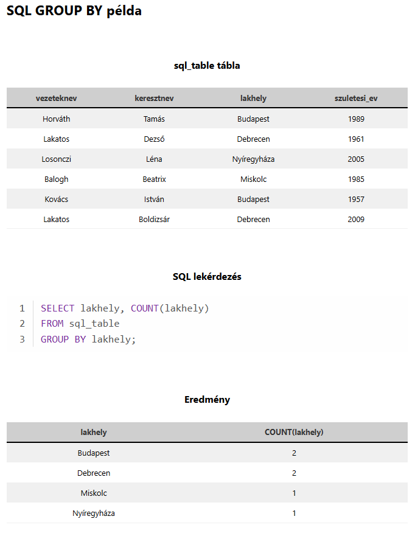

A stabil alapokhoz és a még stabilabb érettségihez vezető legrövidebb út
A sikeres érettségihez rendszeres gyakorlás szükséges. Érdemes legalább 10–15 korábbi feladatsort megoldani, valamint külön begyakorolni a legfontosabb és leggyakoribb feladattípusokat.
Komplex, érettségi jellegű feladatsorok, amelyek tartalmazzák a leggyakrabban előforduló típusfeladatokat.
Amikor egy lekérdezés eredményét egy másik lekérdezés feltételeként (WHERE) vagy forrásaként használjuk fel.
Válogasd ki azokat a termékeket, amelyek ára magasabb az átlagárnál!
SELECT nev, ar
FROM termekek
WHERE ar > (SELECT AVG(ar) FROM termekek);A példában a lakhelyek alapján csoportosítjuk a rekordokat, de ez önmagában csak egy olyan eredményhalmazt adna, amelyben csak egyszer szerepelnének az ismétlődő lakhelyek. Ha hozzárakunk egy COUNT() függvényt, akkor megtudjuk számolni, hogy az egyes lakhelyekből mennyi van.
SELECT lakhely, COUNT(*)
FROM felhasznalok
GROUP BY lakhely;